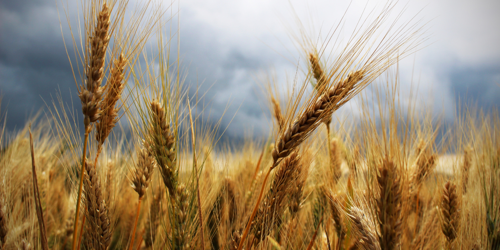

Crop Details
Major Crop Categories
Grains
Explore various grain crops and their cultivation techniques.
Fruits
Discover fruit crops and their growing requirements.
Vegetables
Learn about various vegetable crops and their cultivation methods.
Cash Crops
Explore high-value cash crops and their market potential.
Grains

Wheat
Soil Requirement: Well-drained loamy soil
Growing Season: Fall to early summer
Harvesting: When grain is dry and hard

Rice
Soil Requirement: Clay soil with good water retention
Growing Season: Varies by region and variety
Harvesting: When grains are mature and golden yellow